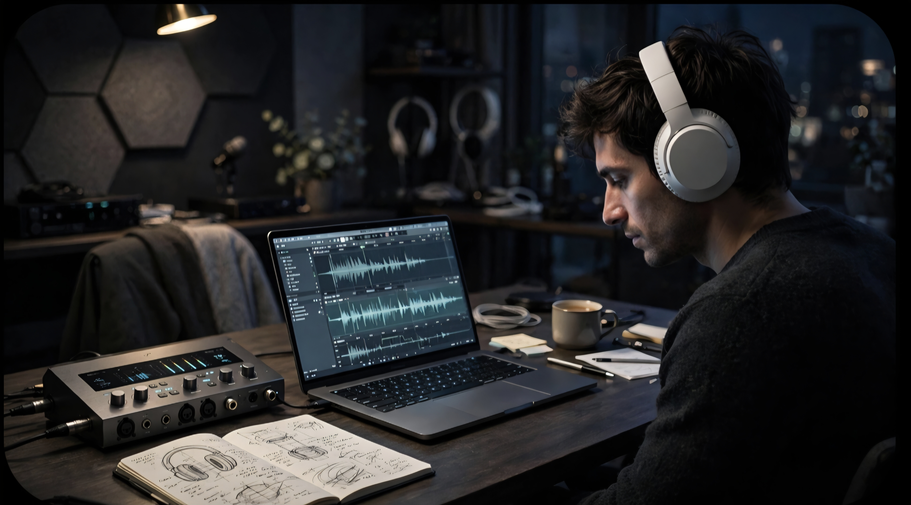

Let's skip the corporate fluff right from the start. If you're reading this, you probably care about the exact same things we do: audio that actually moves you, and hardware that doesn't just look good on a spec sheet, but genuinely performs when it matters most.
Adaptive ANC, LDAC, 65-hour battery and multipoint — why the Space Q45 stops being a gadget and starts being a personal space.
More deep dives are being engineered. New articles drop weekly — stay tuned.
INSIDE VOLTICA5 min read
Inside the Voltica Lab: Why We Build Tech for the Obsessed
The manifesto behind Voltica Store — obsessive engineering, true high-fidelity, and a rejection of the "good enough" standard.
V
The Voltica Engineering & Design TeamFounding Manifesto
Voltica Store — built for listeners who refuse to compromise.
Let's skip the corporate fluff right from the start. If you're reading this, you probably care about the exact same things we do: audio that actually moves you, and hardware that doesn't just look good on a spec sheet, but genuinely performs when it matters most.
Welcome to the official Voltica blog. But before we dive deep into hardware breakdowns and industry trends, we need to say something simple, yet fundamental: thank you. To everyone who has trusted our gear, explored our catalog, and shared your real-world listening experiences with us—you are the driving force behind this brand.
Tired of the "Good Enough" Standard
Why did we launch Voltica? Honestly, because we were tired of settling.
Walk through any consumer electronics aisle today, and you'll notice a depressing trend. The market is flooded with mass-produced, copy-paste gadgets that over-promise on flashy marketing while severely under-delivering on actual engineering. You know the drill: cheap plastic disguised with premium buzzwords, bloated software that gets in the way, and sound signatures engineered for maximum mass-market fatigue rather than pure enjoyment.
We wanted to build something entirely different.
At Voltica, we view hardware as a craft. When we curate or design high-fidelity audio equipment, we aren't just looking at generic frequency response graphs (though, trust us, we obsess over those data points daily). We look at how physical materials resonate, how power efficiency pairs with acoustic clarity, and how a pair of headphones or smart gadgets feel after six hours of continuous, real-world use.
What "High-Fidelity" Actually Means to Us
The term "high-fidelity" (hi-fi) gets thrown around a lot these days. To some, it's a marketing tag; to others, it's an elitist hobby reserved for rooms filled with gold-plated cables and equipment that costs more than a used car.
We reject both extremes.
True hi-fi is about transparency. It's about building a bridge between the artist's studio and your ears so clean that you stop analyzing the equipment and start feeling the music. It's about hearing the subtle intake of breath before a vocal line, the exact decay of a reverb tail in a large hall, or the clean separation of a complex bassline that usually turns into mud on standard consumer gear.
Achieving this isn't about magic—it's about obsessive engineering choices:
Driver Optimization: Selecting and tuning transducers that maintain ultra-low harmonic distortion even when driven hard.
Acoustic Chamber Design: Managing internal airflow and damping to eliminate unwanted resonances before they color the sound.
Ergonomics as Engineering: Because the finest acoustic tuning in the world won't save a device that pinches your head or causes fatigue after twenty minutes.
What to Expect From This Space
We didn't set up this blog to publish thin, keyword-stuffed articles designed solely to game search engines. We built it to open up the hood.
In the coming weeks and months, this space is going to serve as an open laboratory. Here is a glimpse of what we'll be tackling:
Deep Hardware Breakdowns: We'll tear down next-gen gadgets, examine their internal components, and break down why they succeed or fail under rigorous testing.
Audio Engineering Truths: We'll bust common consumer audio myths (from Bluetooth codec realities to active noise cancellation mechanics) so you always know what you're actually paying for.
Behind the Scenes: A transparent look at our design choices, testing protocols, and how we decide which products earn a spot on the Voltica Store shelves.
"We don't just sell technology; we curate the intersection of raw engineering and human emotion. If you haven't taken a look at our current lineup yet, see what we've been building for listeners who refuse to compromise."
We are living through an incredible era for personal tech and audio engineering. Wireless performance is closing the gap on wired purity, smart components are becoming genuinely useful rather than gimmicky, and manufacturing precision has never been higher.
However, navigating this landscape requires a bit of insider knowledge. That's what we want to provide here. Our goal is for this blog to become your trusted hub for staying ahead of the curve, sharpening your technical literacy, and getting the absolute most out of your setup.
So, grab a seat, plug in your favorite pair of headphones, and stay tuned. We're just getting started.
— The Voltica Engineering & Design Team
AUDIO7 min read
Anker Soundcore Space Q45: When Your Headphones Become Your Personal Space
Adaptive ANC, LDAC, 65-hour battery and multipoint — a deep dive into why the Space Q45 stops being a gadget and starts being a personal space.
V
The Voltica Engineering & Design TeamHardware Deep Dive
There is a strange moment that happens when you find a pair of headphones that really works for you.
You put them on during a noisy commute. The train is still moving, people are still talking, traffic is still outside — but somehow, it all feels farther away.
That is one of the reasons good noise-cancelling headphones are about more than simply listening to music. They can change the environment around you.
And that matters more than ever.
We spend hours moving between places, devices, meetings, flights, music, podcasts, videos and conversations. Our headphones have quietly become one of the few pieces of technology we carry almost everywhere.
So the question isn't simply, "How good do these headphones sound?"
It's a better question:
How well do they fit into the way you actually live?
The commute disappears. The music stays.
Noise cancellation is about more than silence
Active noise cancellation has become one of the most useful features in modern headphones, but its real value is easy to underestimate.
Think about an airplane engine. A coffee shop. A busy train. The low rumble of a city.
These sounds are not necessarily loud enough to make music impossible to hear. Instead, they create a constant layer of background noise. You compensate by turning up the volume, concentrating harder, or simply accepting that part of your listening experience is going to disappear.
Adaptive ANC takes a different approach.
The soundcore Space Q45 uses an adaptive noise-cancelling system designed to respond to the surrounding environment. Its multi-stage noise cancellation system is built to target different types of environmental noise rather than simply applying one fixed level of cancellation.
That distinction becomes especially interesting when you're travelling.
You don't necessarily want complete isolation all the time. Sometimes you want music. Sometimes you want to hear what's happening around you. And sometimes you just want to reduce the constant background noise without feeling disconnected from the world.
The Q45 gives you control over that experience through the soundcore app, including adjustable ambient and noise-cancelling settings.
Then there is the part you actually hear
Noise cancellation can make a headphone more comfortable to use, but it doesn't automatically make it sound good.
That's where the hardware matters.
The Space Q45 uses 40 mm double-layer diaphragm drivers, designed to deliver strong low-end presence while maintaining clarity through the rest of the frequency range. The construction uses a combination of materials intended to balance bass response and detail.
It also supports LDAC, alongside AAC and SBC Bluetooth codecs.
For listeners with compatible devices, LDAC can provide a higher-bandwidth wireless connection than conventional Bluetooth codecs, which is particularly useful when you're trying to preserve more detail from your music.
And this is where personal preference becomes important.
A good headphone shouldn't force everyone into the same listening experience.
Through the soundcore app, the Q45 offers customizable EQ and sound controls, allowing you to adjust the presentation to your own taste rather than simply accepting the factory tuning.
Maybe you want more impact from electronic music.
Maybe you prefer a cleaner presentation for acoustic recordings.
Maybe you're somewhere in between.
The point is that the headphones can adapt to you.

Tuning, testing, listening — where the Q45 earns its signature.
Battery life changes the way you use headphones
Battery specifications can look impressive on a product page and then become completely irrelevant in real life.
What matters is whether you're constantly thinking about charging.
The Space Q45 is designed for long sessions, with up to 65 hours of playback with ANC off and up to 50 hours with ANC enabled, according to soundcore's specifications. A five-minute charge can provide up to four hours of listening time.
That last number is particularly useful.
You're heading out.
The battery is almost empty.
You have five minutes.
Instead of cancelling the trip, you plug the headphones in while getting ready and walk out with several more hours of listening available.
Small feature?
Maybe.
But those are often the features you appreciate most after owning something for a while.
One pair. Two devices.
Modern life rarely happens on one device.
You might be listening to music from your phone while working on a laptop. Your phone rings. You switch to the call. Then you return to your computer.
The Space Q45 supports Bluetooth 5.3 and multipoint connectivity, allowing it to remain connected to two devices and switch between them.
There is also a practical detail here that serious listeners should know: LDAC is disabled when multipoint is being used, due to Bluetooth transmission limitations.
That isn't a flaw unique to the Q45. It's simply an important distinction between maximum wireless audio quality and maximum everyday convenience.
And honestly, that's what good technology should do — give you options instead of pretending there is only one correct way to use it.
Designed for long sessions
A headphone can have impressive specifications and still become annoying after an hour.
Comfort is therefore not a luxury feature.
The Q45 uses soft earcups, an adjustable sliding design and rotating hinges designed to make the headphones easier to wear and transport. It weighs approximately 292 grams and includes a protective travel case.
That makes its intended use pretty clear.
This isn't simply a headphone for sitting at a desk for thirty minutes.
It's built around the idea of taking your listening experience with you — onto a plane, onto a train, into a hotel room, into a workspace, or simply into a quieter corner of your home.
So, who is the Space Q45 really for?
Probably someone who has started expecting more from their headphones.
Someone who travels.
Someone who works in noisy environments.
Someone who spends hours listening to music or podcasts.
Someone who wants serious noise cancellation without giving up wireless convenience.
Or maybe someone who simply put on their old headphones one day and thought:
"There has to be something better than this."
The Space Q45 sits in that interesting category where specifications stop being isolated numbers and start working together.
The ANC makes noisy environments easier to handle.
The 40 mm drivers give the headphones their acoustic foundation.
LDAC opens the door to higher-quality wireless audio.
The app lets you personalize the experience.
Multipoint makes everyday device switching easier.
And the battery is designed to keep up with long days.
None of these features alone defines the Q45.
Together, they make a much more compelling argument.
Anker Soundcore Space Q45 — Key Specifications
For those who like to get into the details, here's where the Space Q45 becomes particularly interesting:
Driver
40 mm double-layer diaphragm
Noise Cancellation
Adaptive ANC
Playback
Up to 65 hours
Playback with ANC
Up to 50 hours
Fast Charge
5 minutes = up to 4 hours
Bluetooth
Bluetooth 5.3
Codecs
SBC / AAC / LDAC
Multipoint
Yes
Customization
Soundcore app / HearID / EQ
Microphones
2 microphones with AI-enhanced calling
Weight
Approx. 292 g
Connection
Bluetooth + AUX
Charging
USB-C
Travel
Protective case included
Specifications verified against official soundcore/Anker documentation.
A better way to listen
Technology is at its best when you stop thinking about the technology.
When the ANC fades into the background.
When the connection simply works.
When you stop checking the battery.
When a song you've heard a hundred times suddenly reveals a detail you hadn't noticed before.
That's ultimately what makes a headphone worth carrying everywhere.
The Anker Soundcore Space Q45 isn't trying to be just another wireless headset.
It's designed to become part of your everyday environment — and, when you need it, to give you a little more control over that environment.
At Voltica Store, we're also making the first stage of that journey a little more interesting.
The first 200 Voltica customers receive an exclusive 15% OFF FOR LIFE customer benefit — valid on future Voltica purchases.
No complicated membership tiers.
No temporary discount.
Just an early-customer advantage for the people who get here first.
If you're looking for a headphone built around long listening sessions, adaptive noise cancellation, high-resolution wireless audio and everyday versatility, the Space Q45 is worth taking a serious look at.
Explore the Anker Soundcore Space Q45 at Voltica Store and discover what happens when technology starts working around you instead of getting in your way.
The Future of Everyday.
Stay Ahead of the Curve
One email per week. No noise. Just the sharpest analysis in consumer technology.